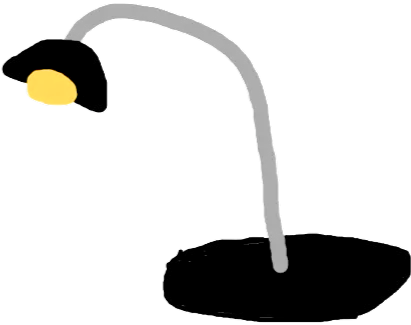

I repeatedly use my lamp because i always rely on it when im working late on my laptop. It just part of my everyday setup and I dont like using my main room light
so i just use my lamp instead which is far better.
